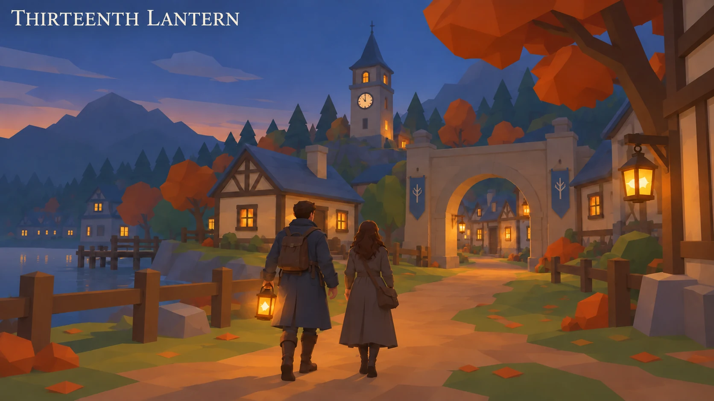

AN ADULT HORROR STORY
Thirteenth Lantern
Choose Your Own Adventure
October learned to call disappearance kindness. Follow Silas Reed and Mara Vale through its ward doors, stolen identities and the thirteen lives held beneath the Mourning Crown.
Graphic body horror, injury, death and captivity.